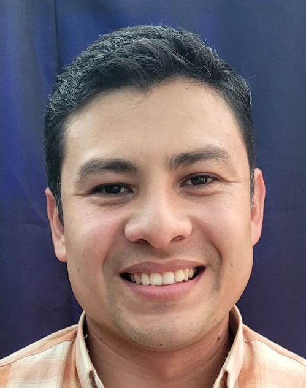

Rafael Guzmán | WDD 130
Hello!, My name is Rafael Guzmán and I am from San Salvador, El Salvador. I enjoy playing video games and basketball in my freetime. My favorite food is pizza and sushi.
Hello!, My name is Rafael Guzmán and I am from San Salvador, El Salvador. I enjoy playing video games and basketball in my freetime. My favorite food is pizza and sushi.